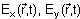
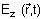
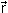
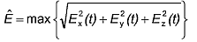
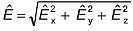
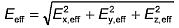
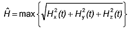
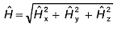
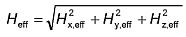

In den in der BG-Regel enthaltenen enthaltenen Begründungen und Erläuterungen werden neben den Begriffsbestimmungen des § 2 der Unfallverhütungsvorschrift folgende Begriffe verwendet:
Siehe auch DIN VDE 0848-1 „Sicherheit in elektrischen, magnetischen und elektromagnetischen Feldern; Teil 1: Definitionen, Mess- und Berechnungsverfahren”
1 EM-Felder sind elektrische, magnetische oder elektromagnetische Felder, die durch ihre elektrische und magnetische Feldstärke beschrieben werden und von Quellen (z.B. Antenne, Elektrodenanordnung, Leiter, Spule) verursacht werden. Sie sind Funktionen des Raumes und können statisch oder zeitlich veränderlich sein.
2.1 Spitzenwert der elektrischen Feldstärke
Der Spitzenwert der elektrischen Feldstärke stellt den tatsächlich auftretenden maximalen Betrag des elektrischen Feldstärkevektors dar. Er wird aus den Komponenten

und
der elektrischen Feldstärke gebildet. Die Komponenten sind dabei bezüglich dreier orthogonaler Einheitsvektoren zu ermitteln. Aus den drei Feldstärkekomponenten in zueinander senkrechten Raumrichtungen x, y und z ergibt sich der Spitzenwert der elektrischen Feldstärke an einem Ort
zu:
(1)Sind statt der Augenblickswerte nur die Spitzenwerte der einzelnen Komponenten der elektrischen Feldstärke bekannt, so lässt sich der Spitzenwert der elektrischen Feldstärke wie folgt abschätzen:

(2)Im Gegensatz zu Gleichung (1) bleiben hier die Phasenbeziehungen der Komponenten der elektrischen Feldstärke unberücksichtigt. Aus diesem Grund stellt der nach Gleichung (2) berechnete maximal mögliche Spitzenwert der elektrischen Feldstärke eine obere Abschätzung für den im konkreten Fall auftretenden Spitzenwert der elektrischen Feldstärke dar.
2.2 Effektivwert der elektrischen Feldstärke
Der Effektivwert der elektrischen Feldstärke ergibt sich aus den Effektivwerten der einzelnen Komponenten der elektrischen Feldstärke zu:

(3)Gleichung (3) gilt unabhängig von den Phasenbeziehungen zwischen den einzelnen Komponenten der elektrischen Feldstärke.
3.1 Spitzenwerte der magnetischen Feldstärke
Der Spitzenwert der magnetischen Feldstärke stellt den tatsächlich auftretenden maximalen Betrag des magnetischen Feldstärkevektors dar. Er wird aus den Komponenten und der magnetischen Feldstärke gebildet. Die Komponenten sind dabei bezüglich dreier orthogonaler Einheitsvektoren zu ermitteln. Aus den drei Feldstärkenkomponenten in zueinander senkrechten Raumrichtungen x, y und z ergibt sich der Spitzenwert der magnetischen Feldstärke an einem Ort zu:

(4)Sind statt der Augenblickswerte nur die Spitzenwerte der einzelnen Komponenten der magnetischen Feldstärke bekannt, so lässt sich der Spitzenwert der magnetischen Feldstärke wie folgt abschätzen:

(5)Im Gegensatz zu Gleichung (4) bleiben hier die Phasenbeziehungen der Komponenten der magnetischen Feldstärke unberücksichtigt. Aus diesem Grund stellt der nach Gleichung (5) berechnete maximal mögliche Spitzenwert der magnetischen Feldstärke eine obere Abschätzung für den im konkreten Fall auftretenden Spitzenwert der magnetischen Feldstärke dar.
3.2 Effektivwert der magnetischen Feldstärke
Der Effektivwert der magnetischen Feldstärke ergibt sich aus den Effektivwerten der einzelnen Komponenten der magnetischen Feldstärke zu:

(6)Gleichung (6) gilt unabhängig von den Phasenbeziehungen zwischen den einzelnen Komponenten der magnetischen Feldstärke.
Die magnetische Flussdichte B in T kann über die Formel
|
B = μ0 * μr * H (7) mit |
5 Leistungsdichte
Die Leistungsdichte S in W/m2 ist der Quotient aus elektromagnetischer Leistung und einer Fläche senkrecht zur Ausbreitungsrichtung, durch die diese Leistung hindurchtritt, bzw. das Produkt aus den zur Ausbreitungsrichtung transversalen Feldkomponenten des elektromagnetischen Feldes.